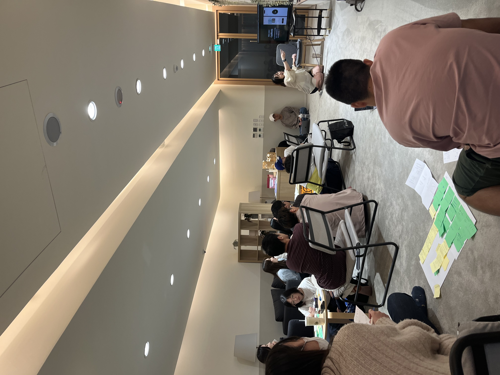
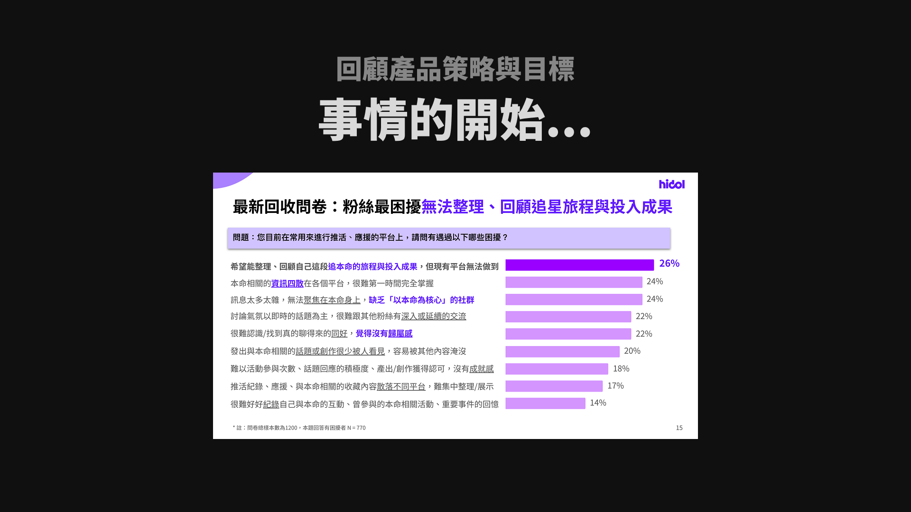
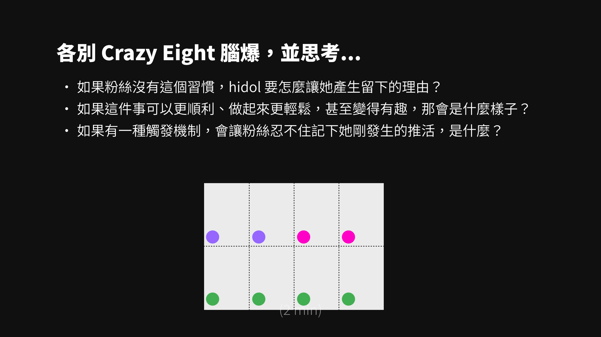
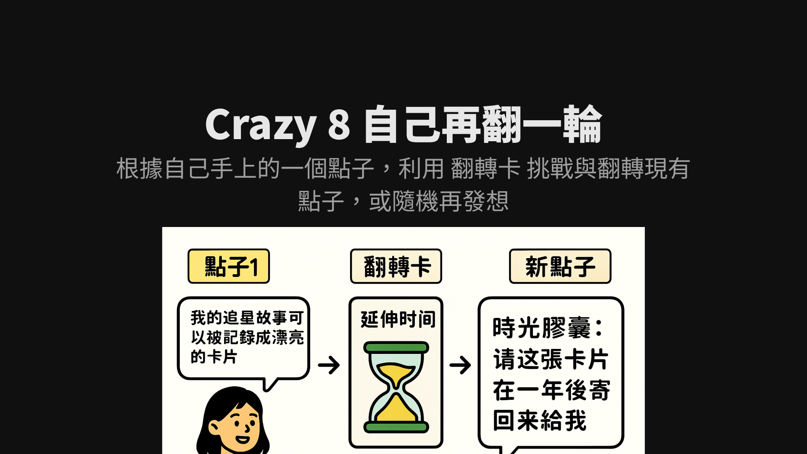
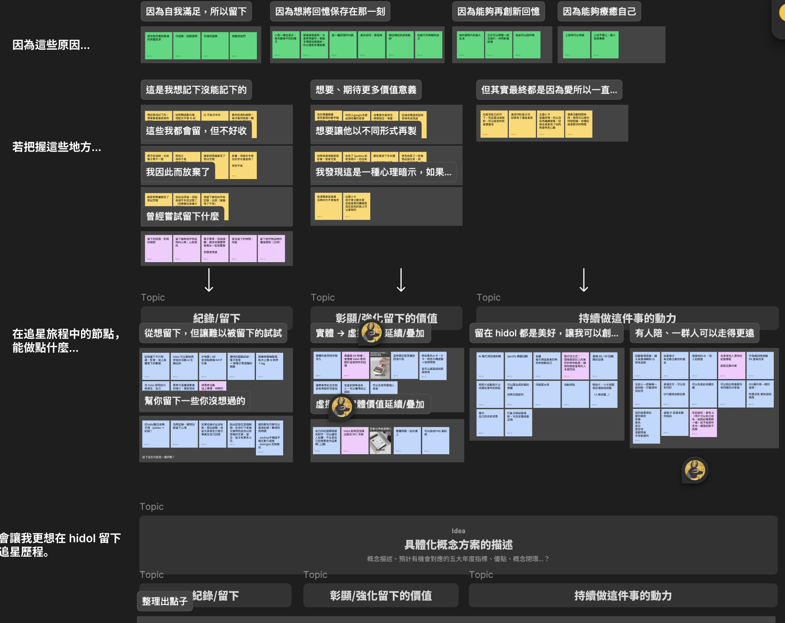
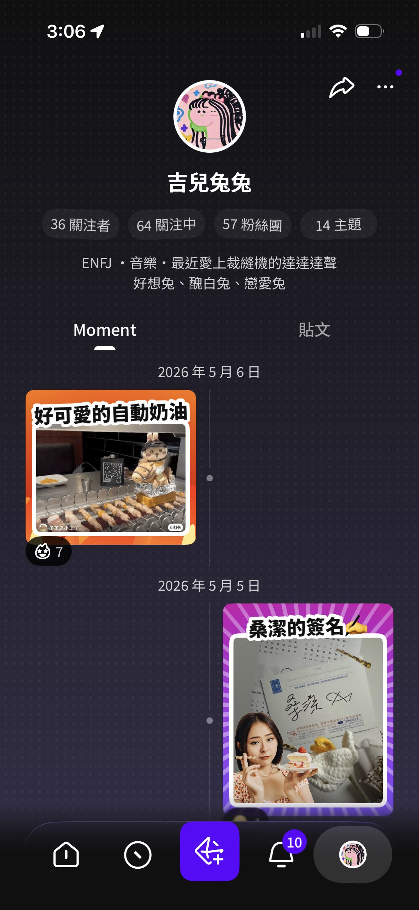
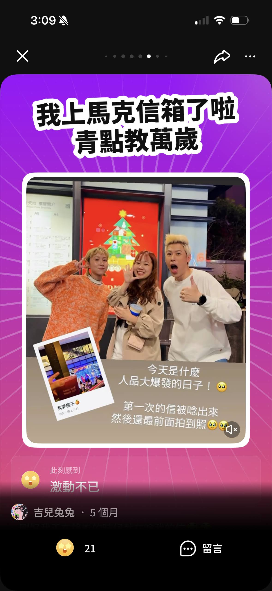

工作坊共創 · 產品落地
這個專案的起點是一份問卷。我們從 TA 中找到一個共同痛點：「無法整理、回顧追星旅程與投入成果」。
但這個問題大得難以直接設計。「追星的投入成果」是什麼？追韓團跟台灣明星的答案會一樣嗎？我們決定先不急著給答案——而是把公司裡真正熱愛追星的人找來，一起探索。
工作坊當天，我請每個人帶來一件自己追星時留下的小物。大家互相猜：這個人為什麼會留著這個？當下是什麼感受？這個破冰環節讓整個房間一下子活了——因為每個人心裡都有一個只有自己才懂的追星邏輯。


破冰之後進入 Crazy Eight 腦力激盪，把大家腦中的奇思妙想先全部榨出來；接著看現有市面上的紀錄 app，為方向做第一次收斂；最後我用自製的翻轉卡，讓大家對自己的想法再挑戰一輪。


但說實話，工作坊結束後才是最精彩的部分。我帶著滿桌的便利貼，從故事脈絡開始抽絲剝繭——找原因、找機會，從「留下紀錄」到「彰顯價值」到「持續動力」，一步步轉化成方案概念。再和 PM 團隊對焦目的、排定優先級，完成提案。
切入點與設計判斷
這個功能是核心還是加分？例如 AI 角色回饋的構想很有趣，但 IP 洽談成本高、吸引力也尚未驗證，在記錄工具都還沒站穩的狀況下，它是錦上添花，不是地基。最終優先選擇掃描辨識物件快速記錄——降低上手門檻，才能讓更多人真正開始記錄。

Moment，就從這裡開始成形。


成果
- App 端 2024 年 10 月上線，Web 端 11 月完整上線
- 成功將「工具剛需」轉化為平台核心功能
- 12 月起持續強化應用動機與流程優化